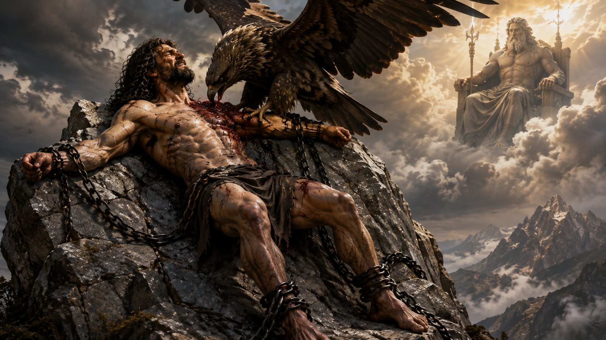

Bir kayaya zincirlenmiş ölümsüz bir Titan düşünün. Kaçması mümkün değil. Her gün gökten dev bir kartal geliyor, bedenini parçalayarak karaciğerini yiyor. Gece olduğunda karaciğeri yeniden büyüyor ve ertesi gün aynı işkence baştan yaşanıyor. Prometheus'un Yunan mitolojisindeki ünlü cezası budur. Fakat hikâyenin en ilginç tarafı cezanın korkunçluğu değil, Zeus'un Prometheus'u neden böylesine ağır bir cezaya mahkûm ettiğidir.
Çünkü Prometheus yalnızca tanrılardan ateşi çalmadı. Zeus ile arasındaki mücadele bundan önce başlamıştı. İnsanlarla tanrıların paylarının belirlendiği Mekone'de Zeus'u kandırmaya çalıştı, ardından Zeus'un insanlardan sakladığı ateşi geri götürdü ve bazı mitolojik geleneklerde Olimpos hükümdarının geleceğini tehdit eden bir sırrı açıklamayı reddetti. Böylece Prometheus'un cezası, basit bir hırsızlığın karşılığı olmaktan çıkarak tanrısal otorite, insanlığın yükselişi ve bilginin gücü etrafında şekillenen çok daha büyük bir çatışmanın parçası hâline geldi.
Prometheus'un hikâyesini karmaşıklaştıran başka bir nokta daha vardır: Bugün bildiğimiz anlatının tamamı tek bir Antik Yunan metninde bulunmaz. MÖ 8. ve 7. yüzyıllarda yaşamış Hesiodos'un Theogonia ve İşler ve Günler adlı eserlerindeki Prometheus ile daha sonraki Zincire Vurulmuş Prometheus tragedyasının kahramanı aynı olayların içinde farklı biçimlerde yorumlanır. Hesiodos'ta Zeus'u kandırmaya çalışan son derece kurnaz bir figür öne çıkarken, tragedyada Prometheus insanlara uygarlığın araçlarını veren ve Zeus'un baskısına boyun eğmeyen büyük bir hayırsevere dönüşür. Pseudo-Apollodoros gibi daha sonraki yazarlar ise bugün popüler kültürde bildiğimiz hikâyenin başka ayrıntılarını aktarır.
Bu nedenle Prometheus'un cezasını gerçekten anlamak istiyorsak hikâyeye kartalın karaciğerini yemesiyle değil, çok daha önce yaşanan bir olayla başlamamız gerekir. Çünkü Zeus'un öfkesi ateşin çalındığı gün doğmamıştır.
Prometheus Kimdir?
Prometheus, Yunan mitolojisinde Titan İapetos'un oğullarından biridir. Hesiodos'un Theogonia adlı eserinde annesi Okeanos'un kızı Klymene olarak verilir; kardeşleri ise Atlas, Menoitios ve Epimetheus'tur. Aynı aileden gelen bu dört figürün kaderleri dikkat çekicidir: Menoitios Zeus tarafından yıldırımla vurulur, Atlas göğü taşımaya mahkûm edilir, Epimetheus Pandora'yı kabul ederek insanların kaderini değiştirir, Prometheus ise zincire vurularak korkunç bir işkenceye mahkûm edilir.
Prometheus'u kardeşlerinden ayıran temel özellik fiziksel gücü değil, zekâsı ve öngörüsüdür. Adı geleneksel olarak "önceden düşünen" ya da "öngören" anlamıyla açıklanırken kardeşi Epimetheus'un adı "sonradan düşünen" düşüncesiyle ilişkilendirilir. Mitlerdeki davranışları da bu karşıtlığa uygundur. Prometheus sürekli hesap yapan, sonuçları önceden gören ve Zeus'un kararlarına karşı bile plan geliştiren figürdür; Epimetheus ise Prometheus'un Zeus'tan gelecek hiçbir armağanı kabul etmemesi yönündeki uyarısına rağmen Pandora'yı kabul eder.
Fakat burada internette sık tekrarlanan önemli bir bilgiyi ayırmak gerekir. Prometheus'un insanları çamurdan yarattığı anlatısı, en eski Prometheus hikâyesinin değişmez bir parçası değildir. Hesiodos'un Prometheus anlatısında Titan insanların yaratıcısı olarak tanıtılmaz. İnsanlar zaten vardır ve Prometheus onların tanrılar karşısındaki çıkarlarını koruyan figür olarak hareket eder. Prometheus'un insan bedenini toprak ve sudan biçimlendirdiği anlatı daha sonraki kaynaklarda açık hâle gelir. Örneğin Pseudo-Apollodoros, Prometheus'un insanları su ve topraktan şekillendirdiğini ve onlara ateşi verdiğini doğrudan aktarır.
Bu ayrım küçük görünse de Prometheus'un hikâyesini anlamak açısından önemlidir. Çünkü en eski anlatılarda onun insanlarla ilişkisi bir "yaratıcı tanrı" ilişkisinden çok koruyucu ve aracılık eden bir Titan ilişkisine benzer. İnsanların tanrılarla olan düzeninde onların lehine müdahale eder ve tam da bu müdahaleler Zeus'la arasındaki çatışmayı başlatır.
Zincire Vurulmuş Prometheus tragedyasında bu ilişki çok daha ileri götürülür. Buradaki Prometheus, insanların başlangıçta son derece çaresiz durumda olduğunu anlatır. Onlara sayı bilgisini, yazıyı, hayvanlardan yararlanmayı, gemiciliği, ilaç bilgisini, kehanet yöntemlerini ve madenlerden yararlanmayı öğrettiğini söyler. Ateş de bu büyük uygarlık paketinin merkezindedir. Böylece Prometheus yalnızca insanların üşümemesi için ateş getiren bir Titan değil, insanı doğa karşısında güçlendiren teknik bilginin mitolojik kaynağı hâline gelir.
Bu yüzden Prometheus'un sonraki yüzyıllarda bilgi, teknoloji, bilim ve hatta insanın sınırları aşma arzusuyla özdeşleştirilmesi tesadüf değildir. Ancak bu kahramanca Prometheus görüntüsünü doğrudan bütün Antik Yunan geleneğine taşımak da doğru olmaz. Hesiodos'un anlatısında Prometheus'un eylemlerinin sonuçları çok daha karanlıktır. Onun Zeus'la giriştiği zekâ mücadelesi sonucunda insanlar ateşe kavuşur; fakat aynı zamanda çalışma, sıkıntı ve Pandora aracılığıyla dünyaya yayılan kötülüklerle karşı karşıya kalırlar. İşler ve Günler'de Zeus, Prometheus'un ateşi çalmasının hem Titan'ın kendisi hem de insanlar için ağır bir karşılığı olacağını açıkça bildirir.
Prometheus bu nedenle Yunan mitolojisinde kolayca "iyi" veya "kötü" olarak sınıflandırılabilecek bir karakter değildir. İnsanlara yardım eder, fakat yardımının sonuçları felaket getirir. Zeus'un otoritesine meydan okur, fakat bunu yalnızca merhametle değil kurnazlıkla da yapar. Bilgiyi insanlara ulaştırır, fakat bunun bedelini hem kendisi hem de insanlık öder.
Ve Zeus'la arasındaki ilk büyük kırılma ateş yüzünden değil, bir öküzün nasıl paylaşılacağı yüzünden yaşanır.
Prometheus Neden Cezalandırıldı?
Prometheus'un cezalandırılmasının en bilinen nedeni ateşi tanrılardan çalarak insanlara vermesidir. Ancak özellikle Hesiodos'un anlattığı en eski kapsamlı versiyona baktığımızda bunun olayların yalnızca ikinci aşaması olduğunu görürüz. Zeus ile Prometheus arasındaki çatışmanın başlangıç noktası Mekone'de gerçekleşen kurban paylaşımıdır.
Bu ayrıntı önemlidir; çünkü Prometheus'un cezasını yalnızca "Zeus insanların ateşe sahip olmasını istemedi" şeklinde açıklamak, mitin büyük bölümünü ortadan kaldırır. Hesiodos'un Theogonia'sında ateşin saklanmasının kendisi bile daha önce gerçekleşmiş bir çatışmanın sonucudur. Prometheus önce Zeus'u kandırmaya çalışır, Zeus bunun karşılığında ateşi insanlardan uzak tutar, Prometheus ise ateşi geri çalar. Böylece iki figür arasındaki mücadele hamle ve karşı hamlelerden oluşan bir iktidar çatışmasına dönüşür.
Bu çatışmanın ilk sahnesi Mekone'dir.
Mekone'de Ne Oldu? Prometheus Zeus'u Nasıl Kandırdı?
Hesiodos'un anlattığına göre tanrılar ile ölümlü insanlar Mekone'de bir araya gelir. Burada bir öküz kesilir ve Prometheus hayvanı iki ayrı paya ayırır. Ancak payları eşit veya açık biçimde sunmak yerine Zeus'u yanıltacak şekilde düzenler.
Bir tarafta öküzün yenilebilir etleri ve iç organları bulunur. Prometheus bunları hayvanın midesinin içine gizleyerek dışarıdan değersiz görünen bir pay hâline getirir. Diğer tarafta ise etten arındırılmış beyaz kemikler vardır. Bunların üzerini parlak yağla örter ve böylece işe yaramayan kemikleri çok daha çekici gösterir.
Sonra Zeus'a hangi payı istediğini sorar.
Görüntüye bakılırsa seçim kolaydır: Bir tarafta hoş görünmeyen bir mide, diğer tarafta parlak ve iştah açıcı yağ tabakası vardır. Zeus yağla kaplanmış bölümü seçtiğinde altında yalnızca kemiklerin bulunduğunu görür. Hesiodos bu olayı, insanların kurban edilen hayvanın yenilebilir etini kendilerine ayırırken tanrılar için kemikleri yakmalarının mitolojik açıklaması olarak sunar. Başka bir ifadeyle anlatı yalnızca Prometheus ile Zeus arasındaki bir kandırmacayı değil, Antik Yunan kurban ritüelinin neden bu şekilde uygulandığını açıklayan bir köken mitini de içerir.
Fakat burada dikkat edilmesi gereken çok ilginç bir ayrıntı vardır. Hesiodos'un metni Zeus'un kandırılıp hiçbir şey anlamadığını basitçe söylemez. Tam tersine, Zeus'un hileyi fark ettiği veya önceden bildiği izlenimini veren ifadeler kullanır. Buna rağmen yağla kaplı kemikleri seçer ve ardından öfkelenir. Bu durum uzun zamandır araştırmacıların tartıştığı noktalardan biridir: Her şeyi bilen ve Prometheus'un hilesini görebilen Zeus neden kötü payı seçmiştir?
Bunun tek ve kesin bir cevabı yoktur. Ancak Hesiodos'un Zeus'u gerçekten safça kandırılmış güçsüz bir hükümdar olarak göstermek istemediği açıktır. Anlatının sonunda Zeus'un otoritesi sarsılmaz; aksine Prometheus'un her hamlesine daha ağır bir karşılık verir. Dolayısıyla Mekone sahnesi bir zekâ yarışması olduğu kadar, Prometheus'un Zeus'un kurduğu düzenin sınırlarını ne kadar zorlayabileceğinin ilk sınavıdır.
Bu olay aynı zamanda insanlar ile tanrılar arasındaki ayrımın belirginleştiği bir eşik olarak da okunabilir. Kurban edilen hayvanın eti insanlara kalırken tanrılara dumanı yükselen kemikler sunulur. İnsanlar yemek zorundadır; tanrılar ise ölümsüzdür ve insanların ihtiyaç duyduğu besine ihtiyaç duymazlar. Böylece kurban ritüeli, tanrılarla insanlar arasındaki ilişkiyi kurarken aynı zamanda aralarındaki temel farkı da görünür hâle getirir.
Prometheus görünüşte insanlara iyi payı kazandırmıştır.
Fakat Zeus'un cevabı çok daha ağır olacaktır.
Zeus İnsanlardan Ateşi Neden Aldı?
Mekone'deki olayın ardından Zeus, Prometheus'un hilesine doğrudan Prometheus'u cezalandırarak karşılık vermez. Bunun yerine insanları ateşten mahrum bırakır. Hesiodos'un Theogonia'sında Zeus'un, Prometheus'un hilesini hatırlayarak ölümlü insanlara ateşin gücünü vermediği açık biçimde anlatılır. İşler ve Günler ise aynı çatışmayı insanların geçimini sağlamak için artık emek harcamak zorunda kalmasıyla daha geniş bir çerçeveye yerleştirir.
Burada modern anlatılarda sık yapılan küçük ama önemli bir hata vardır. Prometheus'un ateşi insanlara ilk kez verdiği düşünülür. Hesiodos'un anlatısı ise Zeus'un ateşi insanlardan sakladığını, Prometheus'un daha sonra onu çaldığını söyler. Bu nedenle Hesiodos bağlamında olay, insanlığın daha önce hiç bilmediği bir şeyi keşfetmesinden ziyade Zeus tarafından erişimi engellenen ateşin Prometheus tarafından yeniden insanlara ulaştırılması şeklinde okunmalıdır.
Ateşin kaybedilmesi sıradan bir mahrumiyet değildir. Antik dünyada ateş yalnızca ısınmak veya karanlığı aydınlatmak anlamına gelmez. Yiyeceklerin pişirilmesini, seramiğin üretilmesini ve özellikle metal işçiliği gibi teknolojilerin gelişmesini mümkün kılan temel araçlardan biridir. Zincire Vurulmuş Prometheus geleneğinin ateşi insanlığın öğrendiği bütün sanatların başlangıcıyla ilişkilendirmesi de bu yüzden anlamlıdır.
Zeus'un yaptığı şey bu açıdan değerlendirildiğinde yalnızca insanlardan bir alevi almak değildir. İnsanın teknik gücünün kaynağını kontrol etmektir.
Prometheus ise Zeus'un bu kararını kabul etmez.
Ve Zeus'u ikinci kez kandırmaya karar verir.
Prometheus Ateşi Nasıl Çaldı?
Prometheus'un ateşi çalması, Yunan mitolojisinin en ünlü sahnelerinden biri olmasına rağmen ayrıntısı çoğu popüler anlatıda kaybolmuştur. Prometheus ateşi elinde yanan bir meşaleyle Olimpos'tan kaçırmaz. Hesiodos'un hem Theogonia hem de İşler ve Günler adlı eserinde ateşi içi boş bir narthex sapının içinde gizlediği anlatılır. Pseudo-Apollodoros da daha sonraki anlatısında aynı ayrıntıyı korur.
Narthex genellikle dev rezene olarak tanımlanan Ferula communis ile ilişkilendirilir. Bitkinin kalın sapının içindeki kuru öz, ateşi kor hâlinde taşıyabilecek özelliklere sahiptir. Dış kısmı tamamen yanmadan içindeki özün yavaşça yanabilmesi, ateşin bir yerden başka bir yere taşınmasını mümkün kılar. Bu nedenle Prometheus'un ateşi rezene sapına saklaması yalnızca fantastik bir mitolojik ayrıntı değildir; gerçek dünyada ateş taşıma yöntemleriyle bağlantılı son derece anlamlı bir unsurdur. Pseudo-Apollodoros'un metnine eşlik eden klasik yorum geleneği de narthexin ateş taşımaya uygun bu özelliğine dikkat çeker.
Prometheus böylece Zeus'un yasağını aşar ve ateş yeniden insanların arasında yanmaya başlar.
Hesiodos'un anlatısında Zeus uzaktan insanların arasında parlayan ateşi gördüğünde ne olduğunu anlar. Artık mesele yalnızca Mekone'deki eski hile değildir. Prometheus, Zeus'un verdiği cezayı bilinçli olarak geçersiz kılmıştır.
İlk olayda Zeus'un payıyla oynayan Prometheus, ikinci olayda onun insanlar üzerindeki kararını bozmuştur.
İşte tam bu noktadan sonra çatışmanın niteliği değişir.
Zeus artık yalnızca ateşi geri almakla yetinmeyecektir. Prometheus'u doğrudan cezalandıracak; insanlara ise ateşin karşılığında başka bir "armağan" gönderecektir.
Bu armağanın adı Pandora olacaktır.
Prometheus'un Cezası Neydi?
Prometheus'un ateşi insanlara geri vermesi, Zeus ile arasındaki çatışmanın artık geri dönülemeyecek noktaya ulaşmasına neden oldu. Mekone'de tanrılarla insanların paylarını belirleyen düzene müdahale etmiş, ardından Zeus'un insanlardan sakladığı ateşi çalarak onun kararını ikinci kez bozmuştu. Zeus'un vereceği karşılık da bu nedenle geçici bir ceza olmayacaktı. Prometheus ölümsüz olduğu için öldürülemezdi; bunun yerine ölmeden sürekli acı çekebileceği bir cezaya mahkûm edildi. Hesiodos'un Theogonia'sında Zeus'un Prometheus'u çözülemeyen zincirlerle bağladığı, bedeninin ortasından bir bağ ya da kazık geçirildiği ve üzerine uzun kanatlı bir kartal gönderildiği anlatılır. Kartal gündüzleri Prometheus'un ölümsüz karaciğerini yerken organ gece boyunca yeniden büyüyor, böylece işkence ertesi gün yeniden başlayabiliyordu.
Bugün Prometheus denildiğinde akla gelen kayaya zincirlenmiş çıplak Titan görüntüsü ise özellikle daha sonraki edebî ve sanatsal geleneğin etkisiyle biçimlenmiştir. Pseudo-Apollodoros, Zeus'un Hephaistos'a Prometheus'un bedenini Kafkas Dağı'na çivilemesini emrettiğini açık biçimde aktarır. Prometheus burada yıllarca bağlı kalır; kartal her gün gelerek karaciğerinden yer ve organ gece yeniden oluşur. Böylece cezanın korkunçluğu yalnızca fiziksel acıdan kaynaklanmaz. Prometheus için ölüm bir kurtuluş değildir. Ölümsüzlüğü, normalde tanrısal varlıkların en büyük ayrıcalıklarından biriyken Zeus'un elinde işkencenin sonsuza kadar sürdürülebilmesini sağlayan bir araca dönüşür.
Ancak Prometheus'un nasıl zincirlendiğinin en etkileyici anlatımı Zincire Vurulmuş Prometheus tragedyasında karşımıza çıkar. Eser geleneksel olarak Aiskhylos'a atfedilmekle birlikte modern klasik filolojide yazarlığı konusunda uzun süredir tartışma bulunduğunu da belirtmek gerekir. Tragedya, Prometheus'un ateşi çalmasını yeniden anlatmak yerine doğrudan cezanın uygulanmasıyla başlar. Böylece seyirci neden cezalandırıldığını zaten bildiği bir figürü, daha ilk sahnede Zeus'un otoritesi karşısında savunmasız hâlde görür. Bu tercih Prometheus'un hikâyesini bir hilekârın cezasından çıkararak iktidar, direnme ve adalet üzerine çok daha büyük bir çatışmaya dönüştürür.
Prometheus'u Kayaya Kim Zincirledi?
Prometheus'u kayaya zincirleyen kişinin yalnızca Zeus olduğunu söylemek eksik kalır. Zeus cezayı emreden hükümdardır; fakat Zincire Vurulmuş Prometheus'ta emri yerine getiren kişi ateş ve metal işçiliği tanrısı Hephaistos'tur. Ona Kratos ve Bia, yani Güç ve Zor eşlik eder. Bu figürlerin seçimi oldukça anlamlıdır. Zeus sahnede görünmez; iktidarını kendisi gelmeden, emirlerini uygulayan güçler aracılığıyla hissettirir. Hephaistos ise Prometheus'a karşı kişisel bir nefret duymaz. Tam tersine başka bir tanrıyı böylesine ağır bir cezaya bağlamak zorunda kaldığı için acı çeker, fakat Zeus'un buyruğuna karşı gelmeye cesaret edemez.
Bu sahne aynı zamanda ateş hırsızlığını ironik bir biçimde Prometheus'un cezasına bağlar. İnsanlara ulaştırılan ateş zanaatın ve metal işçiliğinin temelidir; Prometheus'u zincirleyen demir bağları hazırlayabilecek tanrı ise tam da demirciliğin efendisi Hephaistos'tur. Prometheus'un insanlığa kazandırdığı teknik gücün tanrısı, şimdi aynı teknik gücü onun bedenini hareketsiz bırakmak için kullanmaktadır. Tragedya bu karşıtlığı uzun bir açıklamayla anlatmaz; Hephaistos'un Prometheus'u kayaya sabitlemesi görüntünün kendisini yeterince güçlü hâle getirir.
Kratos'un tavrı ise çok farklıdır. Hephaistos'un tereddüt ettiği yerde Kratos, Zeus'un emrinin eksiksiz uygulanmasını ister. Prometheus'un insanlara duyduğu aşırı sevginin bedelini ödemesi gerektiğini savunur ve onu özgür bırakabilecek hiçbir boşluk kalmaması için zincirlerin sıkıca vurulmasını talep eder. Bia ise sahnede konuşmaz; varlığı bile zor kullanmanın yeterli ifadesidir. Böylece tragedyanın daha başlangıcında Prometheus'un cezası yalnızca bedensel bir işkence değil, yeni kurulmuş Zeus iktidarının ne kadar sert olabileceğinin gösterisine dönüşür.
Prometheus'un bulunduğu yer de anlatının atmosferini güçlendirir. Tragedya onu insan yerleşimlerinden uzakta, dünyanın ıssız sınırlarında kayalık bir bölgede tasvir eder. Daha sonraki kaynaklarda bu yer açıkça Kafkasya ile özdeşleştirilir ve Pseudo-Apollodoros Kafkas Dağı'nı İskit ülkesindeki bir dağ olarak tanımlar. Dolayısıyla bugün sıkça kullanılan "Prometheus Kafkas Dağları'na zincirlendi" ifadesinin antik gelenekte sağlam bir karşılığı vardır. Bununla birlikte bütün dönemlerin bütün kaynaklarında aynı coğrafi ayrıntının aynı açıklıkta verilmediğini unutmamak gerekir.
Prometheus'un Karaciğerini Hangi Hayvan Yiyordu?
Prometheus'un cezasının en tanınmış unsuru, her gün bedenine saldırarak karaciğerini yiyen kartaldır. Hesiodos hayvanı uzun kanatlı bir kartal olarak tanımlar ve Prometheus'un ölümsüz karaciğerinin gece boyunca, kartalın gündüz yediği miktar kadar yeniden büyüdüğünü söyler. Pseudo-Apollodoros'ta da aynı temel düzen korunur: Kartal her gün gelir, karaciğerin parçalarını yer ve organ gece yeniden oluşur. Bu nedenle internette zaman zaman kullanılan "akbaba" ifadesi bazı sonraki çeviri ve sanat geleneklerinde karşımıza çıksa da erken Yunan anlatısı bakımından kartal demek daha doğrudur.
Kartalın seçilmesi de rastlantısal değildir. Kartal Yunan dünyasında Zeus'la güçlü biçimde ilişkilendirilen bir kuştur ve daha sonraki sanat ile edebiyat geleneğinde onun en tanınmış hayvan sembollerinden biri hâline gelir. Dolayısıyla Prometheus'un bedenini parçalayan hayvan yalnızca vahşi bir yırtıcı değildir; Zeus'un göksel iktidarını hatırlatan bir figürdür. Prometheus dünyanın uzak ucunda kayaya bağlı olsa bile Zeus'un gücünden kaçamaz. Her gün gökyüzünden inen kartal, hükümdarın cezasını tekrar tekrar Prometheus'un bedeninde uygular.
Pseudo-Apollodoros daha da ileri giderek Herakles tarafından öldürülecek bu kartalın Ekhidna ile Typhon'un yavrusu olduğunu aktarır. Bu ayrıntı bütün Prometheus anlatılarında bulunmadığı için kartalın değişmez soy bilgisi gibi sunulmamalıdır. Fakat daha sonraki mitografik geleneğin Zeus'un cezalandırıcı kuşunu da mitolojik bir soya bağlama eğilimini göstermesi bakımından önemlidir.
Cezanın asıl dehşeti ise kartalın saldırısından çok, saldırının hiçbir zaman tamamlanmamasıdır. Ölümlü bir insan için karaciğerin parçalanması ölümle sonuçlanır ve acı sona ererdi. Prometheus'un karaciğeri ise gece yeniden oluştuğu için beden kendisini yalnızca ertesi gün yeniden parçalanmaya hazırlar. Böylece mit, ölüm ile ölümsüzlük arasındaki alışılmış değerleri tersine çevirir. Prometheus'un ölümsüzlüğü onu acıdan korumaz; tam tersine acının son bulmasını engeller.
Prometheus'un Karaciğeri Neden Sürekli Yenileniyordu?
Prometheus mitiyle ilgili günümüzde en fazla ilgi çeken ayrıntılardan biri de karaciğerin her gece yeniden büyümesidir. Bunun nedeni modern tıpta karaciğerin belirli ölçüde yenilenme kapasitesine sahip olduğunun bilinmesidir. Bu benzerlik nedeniyle internette sık sık "Antik Yunanlılar karaciğerin kendini yenileyebildiğini biliyordu ve Prometheus mitini bunun üzerine kurdu" şeklinde iddialarla karşılaşılır. Ancak bu cümleyi kanıtlanmış tarihsel bir gerçek gibi kullanmak doğru değildir.
Antik metnin bize kesin olarak söylediği şey daha sınırlıdır: Hesiodos, kartalın gündüz yediği ölümsüz karaciğerin gece yeniden büyüdüğünü açıkça anlatır. Buradan hareketle Yunanların modern anlamda hepatik rejenerasyon mekanizmasını bildikleri sonucuna ulaşamayız. Mitolojik bir varlığın organının doğaüstü biçimde yeniden oluşması ile gözleme dayalı anatomik veya tıbbi bilgi aynı şey değildir. Antik yazarların karaciğer yaralanmalarının iyileşmesini gözlemlemiş olmaları mümkündür; fakat Prometheus anlatısının özellikle bilimsel bir rejenerasyon bilgisinden doğduğunu gösterecek yeterli kanıt yoktur.
Karaciğerin seçilmesini yalnızca biyoloji üzerinden açıklamak da Antik Yunan dünyasındaki sembolik önemini gözden kaçırır. Karaciğer antik Akdeniz kültürlerinde önemli bir iç organdı ve özellikle kurban edilen hayvanların iç organlarının incelenmesiyle gerçekleştirilen kehanet uygulamalarında özel bir yere sahipti. Aynı zamanda bedenin yaşamıyla güçlü biçimde ilişkilendiriliyordu. Prometheus'un sürekli yenilenen karaciğerinin parçalanması bu nedenle yaşamsal bir organ üzerinden tekrarlanan işkenceyi son derece güçlü biçimde görünür kılar. Fakat antik metin bize "Zeus özellikle şu sembolik nedenle karaciğeri seçti" şeklinde bir açıklama vermediği için modern yorumlarla kaynakların söylediğini birbirinden ayırmak gerekir.
Buradaki en önemli ayrıntı aslında karaciğerin neden seçildiğinden çok, neden yeniden büyüdüğüdür. Zeus'un amacı Prometheus'u öldürmek değildir; onun cezasının devam etmesini sağlamaktır. Yenilenen organ, işkencenin kendi kendisini sonsuza kadar yeniden kurmasına imkân verir. Prometheus her gece fiziksel olarak iyileşir, fakat bu iyileşme kurtuluş anlamına gelmez. Tam tersine ertesi günkü acının koşuludur. Bu nedenle Prometheus'un cezası Yunan mitolojisindeki en çarpıcı sonsuz işkence anlatılarından biri hâline gelmiştir.
Zeus Yalnızca Prometheus'u mu Cezalandırdı?
Prometheus'un ateşi çalmasının ardından Zeus'un öfkesi yalnızca Titan'a yönelmez. Hesiodos'un anlatısının en önemli fakat popüler özetlerde sıklıkla birbirinden koparılan noktalarından biri budur. Prometheus zincirler ve kartal aracılığıyla cezalandırılırken, insanlar için hazırlanan karşılık Pandora'dır. Bu nedenle Pandora miti Prometheus hikâyesinin yanında duran bağımsız bir "ilk kadın" öyküsü değil, Zeus ile Prometheus arasındaki çatışmanın doğrudan devamıdır.
Hesiodos'un İşler ve Günler'inde Zeus, Prometheus'un kendisini kandırarak ateşi insanlara ulaştırmasına öfkelenir ve buna karşılık insanlara, sevinecekleri fakat aslında kendi felaketlerini kucaklayacakları bir kötülük vereceğini söyler. Ardından Hephaistos'a toprak ile suyu karıştırarak genç bir kadın biçimlendirmesini emreder; Athena ona dokumayı öğretir ve onu süsler, Aphrodite arzu ve çekicilik verir, Hermes ise kurnazlık ve aldatıcı sözlerle donatır. Böylece Pandora'nın yaratılması, Prometheus'un ateş hırsızlığına Zeus'un verdiği cevabın insanlara yönelik kısmını oluşturur.
Burada mitin kurduğu karşıtlık son derece dikkat çekicidir. Prometheus insanlara ateşi getirir; Zeus ise insanlara görünüşte güzel bir armağan gönderir. Her iki şey de ilk bakışta değerlidir, fakat sonuçları insan yaşamını kökten değiştirir. Ateş insanı teknik açıdan güçlendirirken Pandora'nın gelişiyle Hesiodos'un dünyasında zahmet, hastalık ve insan yaşamını kuşatan çeşitli sıkıntılar geri dönüşsüz biçimde ortaya çıkar. İnsanlık böylece tanrısal gücün bir parçasına ulaşmış, fakat bunun bedelini daha ağır bir yaşamla ödemiş olur.
Bu noktada Prometheus'un kardeşi Epimetheus yeniden hikâyenin merkezine girer. Prometheus daha önce kardeşini Zeus'tan gelecek hiçbir armağanı kabul etmemesi konusunda uyarmıştır. Fakat adı "sonradan düşünen" fikriyle ilişkilendirilen Epimetheus, uyarıyı ancak sonuç ortaya çıktıktan sonra hatırlar ve Pandora'yı kabul eder. Böylece iki kardeş arasındaki isim karşıtlığı da olay örgüsünün parçasına dönüşür: Prometheus sonucu önceden görür, Epimetheus ise ancak yaşandıktan sonra anlar.
Pandora'nın gelişiyle Prometheus'un cezası artık yalnızca Kafkasya'daki kayalıklarda yaşanan kişisel bir trajedi değildir. Zeus'un Prometheus'a verdiği karşılık iki ayrı düzlemde işler: Tanrısal düzene meydan okuyan Titan bedeni üzerinden, onun yardım etmeye çalıştığı insanlık ise kendi yaşam koşulları üzerinden cezalandırılır. Prometheus ateşi kazanmıştır; fakat Zeus son sözü henüz söylememiştir. İşte Hesiodos'un anlatısını daha sonraki "insanlığın kahramanı Prometheus" yorumlarından ayıran en önemli noktalardan biri de burada ortaya çıkar. Prometheus'un insanlara yardım etmesi tartışmasız biçimde olumlu sonuçlanan bir zafer değildir; uygarlığın kazanımlarıyla insan yaşamının bedelleri aynı mitolojik anlatının içine yerleştirilmiştir.
Prometheus İnsanlara Neden Bu Kadar Yardım Ediyordu?
Prometheus'un hikâyesinin merkezindeki en önemli sorulardan biri budur. Çünkü Zeus'un öfkesi yalnızca çalınmış bir ateşe değil, Prometheus'un sürekli olarak insanların tarafını tutmasına yönelir. Hesiodos'un anlatısında bu yakınlığın nedeni açık biçimde açıklanmaz. Prometheus insanların yaratıcısı olarak tanıtılmaz; buna rağmen Mekone'deki kurban paylaşımında onların lehine hareket eder ve Zeus'un ateşi saklamasının ardından onu yeniden insanlara ulaştırır. Bu yüzden erken gelenekte Prometheus'un insanlarla ilişkisini "kendi yarattığı varlıkları koruyan tanrı" şeklinde açıklamak doğru değildir. Burada daha çok, tanrısal düzenin içinde ölümlülerin çıkarlarını savunan kurnaz bir aracıyla karşılaşırız.
Zincire Vurulmuş Prometheus geleneğinde ise bu ilişki çok daha belirgin ve duygusal bir boyut kazanır. Prometheus, Zeus'un yeni iktidarı kurulduktan sonra insan soyunun yok edilmek istendiğini, kendisinin ise insanlara acıyarak onları bu sondan kurtardığını söyler. Ardından insanlara yalnızca ateşi değil, yaşamlarını değiştiren pek çok bilgiyi kazandırdığını anlatır. Ev yapmayı, mevsimleri ve gök cisimlerini gözlemlemeyi, sayı bilgisini, yazıyı, hayvanları yük ve ulaşım için kullanmayı, gemiciliği, ilaçları ve madenlerden yararlanmayı insanlara öğrettiğini ileri sürer. Tragedyanın Prometheus'u için ateş bu yüzden tek başına bir armağan değildir; insanı çaresizlikten çıkaran bütün technai, yani sanatlar ve teknik beceriler için gerekli temel güçtür.
Bu anlatı Prometheus'un daha sonraki çağlarda neden "uygarlığın kurucusu" olarak yorumlandığını açıklar. İnsan doğuştan tanrılar kadar güçlü değildir; hızlı koşamaz, kalın kürkü yoktur, pençeleri veya doğal silahları bulunmaz. Buna karşılık bilgi sayesinde çevresini değiştirebilir. Ateşle yemek pişirir, metal işler, araç üretir ve doğanın koşullarına doğrudan boyun eğmek yerine onları dönüştürmeye başlar. Prometheus miti özellikle sonraki düşünce tarihinde bu nedenle insanın teknik zekâsını açıklayan en güçlü sembollerden birine dönüşmüştür.
Ancak antik kaynakların Prometheus'un eylemlerine aynı ahlaki değeri vermediğini yeniden hatırlamak gerekir. Hesiodos'ta Zeus'un kurduğu düzen meşrudur ve Prometheus'un kurnazlığı bu düzeni bozar. Zincire Vurulmuş Prometheus ise bakış açısını tersine çevirerek Zeus'un yeni iktidarını sert ve acımasız gösterir, Prometheus'un insanlara yardımını ise büyük bir fedakârlık olarak sunar. Aynı mitin bir kaynakta tehlikeli bir hile, başka bir kaynakta insanlık adına yapılan kahramanca direniş hâline gelebilmesi, Prometheus'un neden Yunan mitolojisinin en tartışmalı figürlerinden biri olduğunu da açıklar.
Bu farklılık Prometheus'un cezasını yorumlarken özellikle önemlidir. Eğer Hesiodos'un dünyasından bakılırsa ceza, Zeus'un otoritesine tekrar tekrar meydan okuyan bir Titan'ın karşılığıdır. Tragedyanın bakış açısından ise aynı zincirler, insanlara bilgi verdiği için cezalandırılan bir hayırseverin çektiği haksız acıya dönüşür. Prometheus'un sonraki iki bin yıl boyunca özgür düşünceden bilimsel ilerlemeye kadar pek çok kavramın simgesi hâline gelmesini sağlayan şey büyük ölçüde bu ikinci yorum olacaktır.
Prometheus Zeus'un Hangi Sırrını Biliyordu?
Prometheus'un cezasını yalnızca geçmişte işlediği suçlarla açıklamak, özellikle Zincire Vurulmuş Prometheus tragedyasının önemli bir bölümünü eksik bırakır. Çünkü burada Prometheus, Zeus'un yalnızca kendisini cezalandırmak istediği bir suçlu değildir. Aynı zamanda tanrıların hükümdarının geleceğini ilgilendiren kritik bir kehaneti bilen tek figürlerden biridir. Bu bilgi Prometheus'a zincirler içinde bile Zeus karşısında beklenmedik bir güç kazandırır.
Tragedyada Prometheus, Zeus'un bir gün kendisini tahtından edebilecek bir evlilik yapma tehlikesiyle karşı karşıya olduğunu söyler. Kehanetin ayrıntısını başlangıçta açıklamayı reddeder. Zeus ne kadar tehdit ederse etsin bilgiyi zorla alamaz; çünkü Prometheus ölümsüzdür ve daha ağır işkencelere rağmen susabileceğini bilir. Bu durum iki figür arasındaki güç ilişkisinde ilginç bir tersine dönüş yaratır. Zeus Prometheus'un bedenini zincirleyebilir, fakat bildiği şeyi zorla ele geçiremez. Prometheus fiziksel olarak tamamen güçsüzken sahip olduğu bilgi sayesinde tanrıların kralının geleceğini etkileyebilecek konumda kalır.
Kehanet daha sonraki gelenekte deniz tanrıçası Thetis ile açık biçimde ilişkilendirilir. Thetis'in doğuracağı oğlun babasından daha güçlü olacağı önceden bildirilmiştir. Zeus onunla birlikte olursa kendi babası Kronos'a ve büyükbabası Uranos'a yaşattığı kuşak çatışmasının bu kez kendi başına gelme ihtimali doğacaktır. Yunan mitolojisinde iktidar zaten kuşaklar boyunca aynı korkuyla şekillenmiştir: Uranos çocuklarından çekinmiş, Kronos kendi çocuklarını yutmuş, Zeus ise Kronos'u devirerek egemenliği ele geçirmiştir. Thetis'in oğluna ilişkin kehanet bu döngünün Zeus'la da devam edebileceğini düşündürür.
Bu yüzden Zeus Thetis'le evlenmez. Tanrıça ölümlü kahraman Peleus ile evlendirilir ve bu birlikten doğan çocuk, babasından gerçekten çok daha büyük şöhrete ulaşacak olan Akhilleus olur. Böylece Prometheus'un cezasıyla başlayan anlatı, beklenmedik biçimde Troya Savaşı'nın en büyük kahramanlarından birinin doğumuna bağlanır. Thetis'in ölümlü bir erkekle evlendirilmesi, Zeus'un kendi iktidarını tehdit edecek yeni bir tanrısal oğlun doğmasını engellerken Akhilleus'un ölümlü kaderinin de temelini oluşturur.
Burada da kaynakları birbirine karıştırmamak gerekir. Zincire Vurulmuş Prometheus kehaneti güçlü biçimde işler ve Zeus'un geleceğini tehdit eden bir evliliğin varlığını bildirir; Thetis bağlantısı antik yorum geleneğinde ve başka kaynaklarda daha açık hâle gelir. Daha sonraki yazarlar Prometheus'un bu sırrı açıklamasıyla Zeus arasında bir uzlaşma kurulmasını da anlatıya dahil eder. Örneğin Lucian'ın çok daha geç tarihli mizahi diyaloglarından birinde Prometheus, Thetis'in oğlunun babasından güçlü olacağını Zeus'a söyler ve Zeus bunun karşılığında onun serbest bırakılmasını emreder. Bu metin erken mitin bağımsız kanıtı olarak değil, kehanet ile özgürlük arasındaki ilişkinin sonraki antik dünyada nasıl yorumlandığını gösteren bir örnek olarak değerlendirilmelidir.
Prometheus'un bildiği sırın önemi burada ortaya çıkar. Ateşi çalarken kullandığı zekâ onu Zeus'un düşmanı hâline getirmişti; geleceği bilmesi ise sonunda kurtuluşunda etkili olacak bir koz sağladı. Böylece bilgi, Prometheus'un hikâyesinin başından sonuna kadar aynı rolü sürdürür. Onu cezaya götüren de bilgidir, insanlara değer kazandıran da, Zeus karşısında tamamen çaresiz kalmasını engelleyen de.
Prometheus'u Kim Kurtardı?
Prometheus'un sonsuza kadar Kafkas kayalıklarında kalmadığı konusunda antik gelenek büyük ölçüde birleşir. Onu kurtaran kişi, Zeus'un oğlu ve Yunan mitolojisinin en büyük kahramanlarından biri olan Heraklestir. Ancak popüler özetlerde olay çoğu zaman "Herakles geldi, kartalı öldürdü ve Prometheus'u serbest bıraktı" şeklinde birkaç cümleyle geçilir. Kaynaklara baktığımızda ise kurtuluşun Prometheus, Zeus, Herakles ve hatta kentauros Kheiron'un kaderlerini birbirine bağlayan daha karmaşık bir anlatının parçası olduğu görülür.
Hesiodos'un Theogonia'sı, Prometheus'un karaciğerini yiyen kartalın Herakles tarafından öldürüldüğünü açık biçimde anlatır. Daha da önemlisi Hesiodos, Zeus'un buna karşı çıkmadığını belirtir. Zeus'un amacı Herakles'in şöhretini artırmaktır; dolayısıyla kartalın öldürülmesi babanın iradesine karşı yapılan gizli bir isyan değildir. Bu ayrıntı son derece önemlidir, çünkü Prometheus'un kurtuluşunun Zeus'un mutlak yenilgisi şeklinde yorumlanmasını engeller. Zeus cezanın sona ermesine izin verirken kendi otoritesini de korumaktadır.
Pseudo-Apollodoros'un anlatısında Herakles'in Prometheus'la karşılaşması Hesperidlerin altın elmalarını elde etmeye çalıştığı yolculuk sırasında gerçekleşir. Herakles Kafkasya'ya ulaştığında Prometheus'a işkence eden kartalı okuyla vurup öldürür ve Titan'ı bağlarından kurtarır. Bu olay böylece Prometheus mitini Herakles'in maceralarıyla doğrudan birleştirir. Herakles'in rolü yalnızca fiziksel gücünden ibaret değildir; Zeus'un oğlu tarafından gerçekleştirilen kurtuluş, tanrıların kralı ile Prometheus arasındaki çatışmanın da yeni bir aşamaya geçtiğini gösterir.
Herakles'in kartalı öldürmesi, Prometheus'un cezasını oluşturan döngünün temel mekanizmasını kırar. Her gün gelip karaciğeri yiyen hayvan artık yoktur ve Titan üzerindeki fiziksel işkence sona erebilir. Fakat Prometheus'un gerçekten özgür kalabilmesi için bazı geleneklerde başka şartların da yerine getirilmesi gerekir. Bu noktada hikâyeye Kheiron girer.
Kheiron Prometheus'un Kurtuluşuyla Nasıl Bağlantılıydı?
Kheiron, Yunan mitolojisindeki diğer kentauroslardan farklı bir figürdür. Bilgeliği, hekimliği ve kahramanlara öğretmenlik yapmasıyla tanınır; Akhilleus, Asklepios ve başka birçok kahramanın eğiticisi kabul edilir. Ayrıca ölümsüzdür. Fakat Herakles'in kentauroslarla yaşadığı çatışma sırasında Hydra zehrine bulanmış bir ok tarafından yanlışlıkla yaralanır. Zehirli yara iyileşmez; Kheiron korkunç acılar çekmesine rağmen ölümsüz olduğu için ölemez.
Pseudo-Apollodoros burada Prometheus'un hikâyesiyle Kheiron'un trajedisini birbirine bağlar. Kheiron ölmek ister fakat ölümsüzlüğü buna engeldir. Prometheus ise Zeus'a Kheiron'un yerine ölümsüz olmayı kabul eder ve böylece Kheiron'un ölmesine izin verilir. Metindeki bu oldukça sıra dışı değiş tokuş, Prometheus'un serbest bırakılmasını mümkün kılan koşullardan biri olarak sonraki yorum geleneğinde önem kazanmıştır.
Burada anlatının teknik ayrıntılarının bütün antik kaynaklarda aynı olmadığını özellikle belirtmek gerekir. Hesiodos'un erken anlatısında Prometheus'un kurtuluşu için Kheiron'un ölümsüzlüğünün devredilmesi gibi bir şart bulunmaz. Bu bağlantı daha sonraki mitografik geleneğin parçasıdır. Dolayısıyla "Prometheus ancak Kheiron onun yerine ölünce serbest kalabildi" cümlesi bütün Prometheus miti için geçerli evrensel bir kural gibi kullanılmamalıdır.
Yine de iki figürün hikâyelerinin birleşmesi mitolojik açıdan son derece çarpıcıdır. Prometheus ölmeden sonsuz işkenceye mahkûm edilmiştir; Kheiron ise ölmek istediği hâlde ölümsüz olduğu için acısından kurtulamamaktadır. Birinin kurtuluşu özgürlüğe kavuşmak, diğerinin kurtuluşu ise ölebilmektir. Böylece Yunan mitolojisi normalde en büyük tanrısal ayrıcalık sayılan ölümsüzlüğü iki ayrı karakter için de işkenceye dönüştürür.
Bu ayrıntı Prometheus'un cezasının temel temasını da güçlendirir. Ölümsüzlük tek başına nimet değildir; nasıl yaşandığı önemlidir. Prometheus için sonsuz yaşam sürekli parçalanan bir beden anlamına gelirken Kheiron için kapanmayan zehirli yaranın sonu gelmeyen acısıdır. Herakles'in her iki hikâyede de bulunması ise kahramanı yalnızca canavarları öldüren savaşçı değil, tanrıların bile çözemediği acı döngülerini sona erdiren figür hâline getirir.
Zeus Prometheus'u Gerçekten Affetti mi?
Prometheus'un serbest bırakılması, Zeus'un bir anda yaptığı her şeyi unutarak Titan'ı koşulsuz biçimde bağışladığı basit bir barış hikâyesi değildir. Antik kaynaklarda farklı versiyonların bulunmasının nedeni de budur. Hesiodos, Herakles'in kartalı öldürmesini Zeus'un bilgisi ve isteğiyle bağdaştırır; böylece Zeus verdiği cezanın sona ermesine izin verse bile otoritesini kaybetmez. Zincire Vurulmuş Prometheus geleneğinde ise Prometheus'un Zeus'un geleceğiyle ilgili bildiği sır, iki taraf arasındaki olası uzlaşmanın temelini oluşturur. Daha sonraki anlatılar bu unsurları birleştirerek Prometheus'un kehaneti açıkladığını ve ardından serbest bırakıldığını söyler.
Bu çözüm, Zeus'un Yunan mitolojisindeki konumu açısından önemlidir. Eğer Herakles hiçbir izin almadan gelip Prometheus'u kurtarmış ve Zeus buna engel olamamış olsaydı, anlatı tanrıların kralının açık yenilgisiyle sonuçlanmış olurdu. Oysa antik gelenek çoğunlukla Zeus'un egemenliğini korur. Prometheus'un cezası sona erer, fakat bu sona eriş Zeus'un iktidarının yıkılmasıyla değil, çatışmanın yeni bir dengeye ulaşmasıyla gerçekleşir.
Prometheus açısından da durum tam bir teslimiyet değildir. Özellikle tragedya geleneğinde o, Zeus'un baskısı altında düşüncelerinden vazgeçip af dileyen bir mahkûm olarak gösterilmez. Bildiği sırrı bir pazarlık gücü olarak elinde tutar ve geleceğe ilişkin bilgisi sayesinde tanrıların hükümdarıyla karşılıklı bağımlılık ilişkisi kurar. Zeus fiziksel gücü, Prometheus ise bilgiyi temsil eder; sonunda ikisinin de diğerinin sahip olduğu şeye ihtiyaç duyduğu bir uzlaşma ihtimali ortaya çıkar.
Ne yazık ki Prometheus üçlemesinin diğer oyunları günümüze bütünüyle ulaşmadığı için Aiskhylos geleneğinde bu uzlaşmanın tam olarak nasıl gerçekleştiğini kesin biçimde bilmiyoruz. Zincire Vurulmuş Prometheus geleneksel olarak bir üçlemenin parçası kabul edilir ve kayıp Prometheus Lyomenos yani Çözülmüş Prometheus adlı oyunun Titan'ın kurtuluşunu konu aldığı düşünülür. Elimizde yalnızca parçalar ve sonraki yazarların aktardığı bilgiler bulunduğundan, kayıp oyunun bütün olay örgüsünü kesin olarak yeniden kurmak mümkün değildir. Bu belirsizlik Prometheus mitinde sıkça yapılan bir hatayı da gösterir: Farklı kaynaklardan bildiğimiz ayrıntıları tek ve eksiksiz bir antik hikâyenin bölümleriymiş gibi birleştirmemek gerekir.
Prometheus Serbest Kaldıktan Sonra Neden Yüzük Taktı?
Prometheus'un kurtuluşuyla ilgili daha az bilinen ve özellikle SEO açısından değerli ayrıntılardan biri yüzük anlatısıdır. Daha sonraki antik ve geç antik geleneklerde Zeus'un Prometheus'u tamamen bağlarından kurtarmasına rağmen eski cezanın sembolik olarak devam etmesini istediği anlatılır. Buna göre Prometheus, zincirlerinden yapılmış demir bir halka ile Kafkas kayasından bir parçayı parmağında taşımaya devam eder. Böylece teknik olarak hâlâ "demire ve kayaya bağlı" sayılırken fiilen özgürdür.
Bu anlatının erken Hesiodos geleneğinin temel bir parçası olmadığını belirtmek gerekir. Yüzüğün kökenini Prometheus'a bağlayan açıklamalar özellikle daha sonraki yazarların eserlerinde ve mitolojik yorum geleneğinde görülür. Apollodoros'un metnine ilişkin antik paralelleri değerlendiren Frazer'ın notlarında Hyginus, Servius, Plinius ve Isidorus gibi yazarlarda insanların yüzük takma geleneğinin Prometheus'un eski bağlarının hatırasına bağlandığı aktarılır. Bazı başka geleneklerde ise Prometheus'un özgürlüğünden sonra başına bir söğüt dalı tacı takmak zorunda kaldığı anlatılmıştır.
Bu tür hikâyeler antik mitlerin günlük alışkanlıkların kökenini açıklamak için nasıl kullanılabildiğine iyi bir örnektir. Mekone miti kurban etinin insanlar ile tanrılar arasında neden belirli biçimde paylaştırıldığını açıklarken Prometheus'un yüzüğü de insanların neden parmaklarına taşlı metal halkalar taktığına ilişkin mitolojik bir köken öyküsüne dönüşmüştür. Bugün yüzüklerin tarihsel olarak gerçekten Prometheus miti nedeniyle ortaya çıktığını söylemek elbette mümkün değildir. Buradaki anlatı gerçek bir teknolojik veya kültürel başlangıcın kaydı değil, mevcut bir geleneğe sonradan verilen mitolojik açıklamadır.
Prometheus'un kayadan bir parçayı yanında taşıması fikri ise cezanın anlamını güçlü biçimde tamamlar. Özgürlüğüne kavuşmuş olsa bile geçmişte yaşadığı acı tamamen silinmez. Eski bağlarının küçük bir parçasını üzerinde taşımaya devam eder. Böylece Prometheus'un kurtuluşu unutmak değil, yaşadığı cezanın izini özgürlükle birlikte taşımak anlamına gelir.
Prometheus'un Cezası Ne Anlama Gelir?
Prometheus'un cezası, Yunan mitolojisinde yalnızca tanrılara karşı gelmenin sonucunu gösteren korkutucu bir hikâye değildir. Mitin farklı dönemlerde bu kadar güçlü biçimde yaşamaya devam etmesinin temel nedeni, tek bir anlamla sınırlanamamasıdır. Hesiodos'un anlatısında Prometheus'un kurnazlığı Zeus'un kurduğu düzene karşı tehlikeli bir müdahale olarak görülürken, Zincire Vurulmuş Prometheus geleneğinde aynı figür insanlığın gelişmesi uğruna acı çeken bir kahramana dönüşür. Bu iki yaklaşım arasındaki fark, cezanın anlamını da değiştirir. Birinde düzeni bozan Titan hak ettiği karşılığı alırken diğerinde iktidar, bilgiyi paylaşan kişiyi susturmaya çalışmaktadır.
Ateş bu yorumun merkezindedir. İnsanların ateşe sahip olması yalnızca ısınma ve yemek pişirme imkânı kazanması anlamına gelmez. Ateş metal işlemeyi, seramik üretimini ve çok sayıda zanaatın gelişmesini mümkün kıldığı için insanın doğayı dönüştürme gücünün temel sembollerinden biri hâline gelir. Zincire Vurulmuş Prometheus'ta Prometheus'un insanlara öğrettiğini söylediği sayı, yazı, gemicilik, tıp ve madencilik gibi beceriler bu düşünceyi açıkça ortaya koyar. Ateş, insanların tanrılara eşit olmasını sağlamaz; fakat onları yalnızca doğanın şartlarına boyun eğen canlılar olmaktan çıkararak kendi yaşamlarını değiştirebilen varlıklara dönüştürür.
Bu nedenle Zeus ile Prometheus arasındaki çatışma, sonraki dönemlerde sık sık otorite ile bilgi arasındaki mücadele şeklinde yorumlanmıştır. Zeus'un gücü düzen kurma ve hükmetme yetkisinden gelirken Prometheus'un gücü bilgiyi bilmek, geleceği öngörmek ve teknik becerileri aktarabilmektir. Zeus zincirler, kartal ve zor kullanma aracılığıyla Prometheus'un bedenini denetim altında tutabilir; fakat Prometheus'un zihnindeki kehaneti aynı yöntemle ele geçiremez. Bu durum özellikle tragedya geleneğinde fiziksel güç ile zihinsel bilgi arasındaki karşıtlığı son derece belirgin hâle getirir.
Prometheus'un cezası aynı zamanda uygarlığın bedelsiz olmadığını anlatan bir mit olarak da okunabilir. İnsan ateşi kazanır, fakat Hesiodos'un anlatısında bunun ardından Pandora gelir; rahat yaşamın yerini emek, hastalık ve çeşitli sıkıntılar alır. Böylece teknik ilerleme, otomatik olarak kusursuz bir yaşam yaratmaz. İnsan daha güçlü hâle gelirken aynı zamanda çalışmak, üretmek ve yeni sorunlarla mücadele etmek zorunda kalır. Prometheus miti bu nedenle modern çağda bilim ve teknoloji üzerine yapılan tartışmalara kolaylıkla uyarlanmıştır: İnsanlık bilgi sayesinde sınırlarını genişletir, fakat her yeni güç beraberinde yeni sorumluluklar ve riskler de getirir.
Bununla birlikte bütün bu sembolik yorumların antik metinlerin doğrudan söylediği kesin anlamlar olmadığını ayırmak gerekir. Hesiodos bize “bu mit teknolojik ilerlemenin bedelini temsil eder” diye açıklama yapmaz; aynı şekilde Zincire Vurulmuş Prometheus da modern özgürlük kavramını kullanmaz. Bunlar metinlerin farklı çağlarda ürettiği yorum olanaklarıdır. Prometheus'un kalıcılığı da tam olarak buradan gelir. Her dönem onun zincirlerinde kendi iktidar sorununu, ateşinde kendi bilgi arayışını ve direnişinde kendi özgürlük fikrini görebilmiştir.
Prometheus Neden Başkaldırının ve Özgür Düşüncenin Simgesi Oldu?
Prometheus'un modern dünyadaki imajı büyük ölçüde Hesiodos'un kurnaz Titan'ından değil, Zincire Vurulmuş Prometheus'un insanlık uğruna acı çeken kahramanından gelişmiştir. Tragedyada Prometheus Zeus'un emirlerine boyun eğmez, yaptığı şeyden pişman olduğunu söylemez ve karşılaştığı tehditlere rağmen bildiği sırrı açıklamayı reddeder. Bu davranış onu zaman içinde ilahi otoriteye karşı bireysel vicdanın ve düşüncenin temsilcisi hâline getirmiştir.
Özellikle Avrupa'da Rönesans sonrasında klasik mitolojiye duyulan ilginin yeniden güçlenmesiyle Prometheus, yalnızca mitolojik bir karakter olmaktan çıkarak insanın kendi kaderini değiştirme arzusunun sembolüne dönüştü. Aydınlanma düşüncesinin akıl, bilim ve sorgulama üzerinde kurduğu vurgu, Prometheus'un ateşi insanlara taşımasıyla kolaylıkla ilişkilendirilebiliyordu. Ateş artık yalnızca maddi bir güç değil, bilgi ışığı olarak yorumlanmaya başladı. Böylece Zeus'un yasağına rağmen ateşi paylaşan Prometheus, bilginin belirli bir otoritenin elinde tutulmasına karşı çıkan figür olarak yeniden okundu.
Romantik dönemde bu yorum daha da güçlendi. Sanatçılar ve şairler Prometheus'u baskıcı iktidara direnmenin, yaratıcılığın ve bireysel özgürlüğün simgesi olarak kullandılar. Bu modern Prometheus, antik kaynakların birebir tekrarından çok, onların sunduğu temaların yeni siyasi ve felsefi bağlamlarda yeniden işlenmesiyle ortaya çıktı. Dolayısıyla günümüzde “Prometheus özgürlüğün tanrısıdır” demek tarihsel açıdan doğru olmaz; ancak Prometheus'un özellikle modern edebiyat ve düşüncede özgürlük ve başkaldırı sembolüne dönüştüğü rahatlıkla söylenebilir.
Bu dönüşüm, Yunan mitlerinin neden binlerce yıl boyunca yaşamaya devam ettiğini de gösterir. Mitolojik karakterlerin anlamları sabit değildir. Prometheus Hesiodos için Zeus'un düzenini zorlayan kurnaz bir Titan, tragedya yazarı için insanlığın hayırseveri, romantik şair için tiranlığa direnen kahraman, modern bilimkurgu için ise insanın yasak bilgiye ulaşma arzusunun simgesi olabilir. Aynı temel hikâye, farklı dönemlerin kendi kaygılarını anlatmasına imkân verir.
Sanatta Prometheus'un Cezası
Prometheus'un kayaya zincirlenmesi ve kartalın bedenine saldırması, antik dönemden modern çağa kadar sanatçıların en çok ilgisini çeken mitolojik sahnelerden biri olmuştur. Bunun nedeni sahnenin yalnızca dramatik olması değildir. İnsan bedeni, şiddet, direnme, tanrısal ceza ve çaresizlik gibi güçlü temaların tek kompozisyonda bir araya gelmesi, Prometheus'u özellikle resim ve heykel için son derece etkileyici bir konu hâline getirmiştir.
Antik Yunan sanatında Prometheus'un cezasına ilişkin tasvirler seramikler ve başka küçük sanat eserleri üzerinde görülür. Bu erken görüntülerde Prometheus çoğu zaman bağlanmış hâlde, kartal ise bedenine saldırırken gösterilir. Herakles'in kartalı okla vurduğu sahneler de yaygındır. Bu tasvirler, Prometheus mitinin yalnızca edebî metinler aracılığıyla değil, görsel kültür yoluyla da geniş kitleler tarafından bilindiğini gösterir.
Rönesans ve özellikle Barok döneminde sanatçılar Prometheus'un cezasını çok daha dramatik bir biçimde ele almaya başladılar. Peter Paul Rubens'in Prometheus Bound adlı eseri bu geleneğin en ünlü örneklerinden biridir. Prometheus'un bedeni neredeyse bütün kompozisyonu doldururken büyük kartal doğrudan karaciğerine saldırır. Barok sanatın hareket, kas gerilimi ve fiziksel acıyı öne çıkaran anlatımı, Prometheus'un işkencesini son derece güçlü bir görsel sahneye dönüştürür.
Daha sonraki sanatçılar ise yalnızca fiziksel acıya değil, Prometheus'un direnişine odaklanmıştır. Zincirler bu eserlerde bedenin tutsaklığını temsil ederken, Titan'ın yüz ifadesi çoğu zaman iradenin hâlâ kırılmadığını gösterir. Böylece sanat tarihinde Prometheus'un cezası giderek iki katmanlı bir görüntüye dönüşür: Bedeni tamamen yenilmiş görünür, fakat düşüncesi ve iradesi teslim olmamıştır.
Bu sanat eserlerinin antik mitin doğrudan görsel kayıtları olmadığını belirtmek gerekir. Özellikle Rönesans ve sonrasındaki ressamlar kendi dönemlerinin estetik anlayışını, anatomi bilgisini ve Prometheus yorumunu sahneye eklemiştir. Bu yüzden modern bir Prometheus tablosundaki ayrıntılar antik Yunanların hikâyeyi mutlaka aynı şekilde hayal ettiğini göstermez. Buna rağmen bu eserler, mitin zaman içinde nasıl yeniden yorumlandığını anlamak açısından son derece değerlidir.
Edebiyatta Prometheus: Aiskhylos'tan Shelley'ye
Prometheus'un sonraki çağlardaki ününün büyük bölümünü edebiyata borçlu olduğu söylenebilir. Antik dünyadaki en etkili eser kuşkusuz Zincire Vurulmuş Prometheus'tur. Geleneksel olarak Aiskhylos'a atfedilen bu tragedya, Prometheus'un insanlara yaptığı iyilikleri ayrıntılandırarak onun sonraki kahraman imajının temelini atmıştır. Eserin Zeus'u yeni iktidarını sert biçimde kullanan bir hükümdar olarak göstermesi ve Prometheus'un buna karşı direnmesi, modern okuyucuların miti siyasi ve felsefi açıdan yorumlamasına geniş alan bırakmıştır.
Prometheus'un etkisi özellikle Romantik dönemde zirveye ulaşır. İngiliz şair Percy Bysshe Shelley, 1820'de yayımlanan Prometheus Unbound adlı eserinde antik tragedyadan hareket eder ancak hikâyeyi kendi düşünce dünyasına göre yeniden kurar. Shelley'nin Prometheus'u baskıya karşı direnen ve sonunda tiranlığın çöküşüne tanıklık eden idealist bir kahramandır. Bu eser antik mitin devamı değil, Prometheus temasının modern özgürlük ve siyasi düşünce çerçevesinde yeniden yazılmasıdır.
Johann Wolfgang von Goethe'nin Prometheus şiiri de benzer biçimde Titan'ı yaratıcı insanın tanrısal otorite karşısındaki bağımsızlığının sembolü hâline getirir. Goethe'nin Prometheus'u tanrılardan yardım beklemez; kendi dünyasını ve insanlarını kendi gücüyle yaratma iddiasında bulunur. Bu yorum, antik metinlerdeki Prometheus'un modern bireycilikle nasıl birleştirildiğinin en güçlü örneklerinden biridir.
Prometheus adının modern edebiyattaki en ünlü kullanımlarından biri ise Mary Shelley'nin 1818'de yayımlanan Frankenstein; or, The Modern Prometheus adlı romanıdır. Victor Frankenstein ateşi çalmaz, fakat doğanın sınırlarını aşarak yaşam yaratmaya çalışır. Bu nedenle “modern Prometheus” adı, insanın bilgi aracılığıyla tanrısal sınırlara yaklaşması ve bunun sonuçlarıyla yüzleşmesi düşüncesine gönderme yapar. Romanın Prometheus bağlantısı yalnızca “yasak bilgi” fikrine dayanmaz; yaratıcı güç, sorumluluk ve bilginin bedeli gibi temalar da antik mitle ortaklık kurar.
Bu eserler sayesinde Prometheus'un cezası modern dünyada yalnızca geçmişten gelen bir mitolojik olay olmaktan çıkmıştır. Bilimin sınırları, siyasi özgürlük, otoriteye karşı direnme ve insanın kendi yaratıcı gücü üzerine düşünürken kullanılan evrensel bir sembole dönüşmüştür.
Prometheus'un Cezası Hakkında Yaygın Yanlış Bilgiler
Prometheus'un hikâyesi çok farklı dönemlere ait kaynakların zaman içinde tek bir anlatıda birleştirilmesi nedeniyle bugün birçok yanlış veya aşırı basitleştirilmiş bilgiyle aktarılır. Bunlardan en yaygını, Prometheus'un yalnızca ateşi çaldığı için cezalandırıldığı düşüncesidir. Ateş hırsızlığı cezanın merkezindeki olaydır; ancak Hesiodos'un anlatısında çatışma daha önce Mekone'deki kurban paylaşımıyla başlamıştır. Zeus'un ateşi insanlardan saklaması da bu ilk hilenin sonucudur. Dolayısıyla ateşin çalınması, Zeus ile Prometheus arasındaki mücadelenin başlangıcı değil, ikinci büyük aşamasıdır.
Bir başka yaygın yanlış, Prometheus'un bütün antik kaynaklarda insanları çamurdan yarattığı iddiasıdır. En eski kapsamlı Prometheus anlatılarında, özellikle Hesiodos'ta bu rol açık biçimde bulunmaz. Prometheus'un insanları toprak ve sudan biçimlendirdiği gelenek daha sonraki kaynaklarda belirginleşmiştir. Bu nedenle “Prometheus insanlığın yaratıcısıdır” ifadesi kullanılacaksa bunun bütün Yunan geleneğinin ortak görüşü olmadığı belirtilmelidir.
Prometheus'un karaciğerini yiyen hayvanın akbaba olduğu da sıkça söylenir. Antik Yunan kaynaklarında temel hayvan kartaldır. Modern sanat ve bazı çeviri gelenekleri nedeniyle akbaba görüntüsü zaman zaman yaygınlaşmış olsa da Hesiodos ve Pseudo-Apollodoros kartaldan söz eder. Üstelik kartalın Zeus'la olan güçlü sembolik ilişkisi, hayvanın seçimini mitolojik olarak daha anlamlı hâle getirir.
Karaciğerin her gece yeniden büyümesi hakkında da modern tıpla bağlantılı aşırı iddialar vardır. Antik kaynaklar organın yeniden oluştuğunu açık biçimde söyler; fakat buradan Yunanların karaciğer rejenerasyonunu modern bilimsel anlamda keşfettiği sonucu çıkarılamaz. Bu dikkat çekici benzerlik araştırılmaya değer olsa da mitin bilimsel bir anatomik keşfin kaydı olduğunu kanıtlayan yeterli veri bulunmamaktadır.
Prometheus'un Herakles tarafından Zeus'un iradesine tamamen karşı gelinerek kurtarıldığı düşüncesi de eksiktir. Hesiodos, Herakles'in kartalı öldürmesinin Zeus'un bilgisi ve iradesiyle gerçekleştiğini özellikle belirtir. Böylece Prometheus'un kurtuluşu Zeus'un mağlup olduğu bir isyan değil, onun otoritesini koruduğu bir uzlaşma çerçevesine yerleştirilir.
Son olarak Prometheus'u tarih boyunca değişmeden “özgürlük savaşçısı” olarak görmek doğru değildir. Bu imaj özellikle Zincire Vurulmuş Prometheus ve daha sonraki modern edebî yorumlardan güç alır. Hesiodos'un Prometheus'u ise çok daha ambivalan, hatta yer yer eleştirel biçimde anlatılmıştır. Günümüzdeki kahraman Prometheus görüntüsü antik geleneğin yalnızca bir yönünün uzun tarih boyunca güçlenmesinin sonucudur.
Prometheus'un Cezası Ne Kadar Sürdü?
Prometheus'un cezasıyla ilgili internette en sık karşılaşılan rakamlardan biri 30.000 yıldır. Bazı anlatılarda ise 30 yıl, binlerce yıl veya doğrudan sonsuzluk ifadeleri kullanılır. Bu nedenle “Prometheus kaç yıl cezalandırıldı?” sorusuna tek bir rakam vermek, farklı dönemlere ait kaynakları göz ardı etmek anlamına gelir. En eski kapsamlı anlatılardan biri olan Hesiodos'un Theogonia'sı Prometheus'un cezasının kaç yıl sürdüğünü söylemez. Hesiodos yalnızca Titan'ın zincire vurulduğunu, kartalın gündüz karaciğerini yediğini, organın gece yeniden büyüdüğünü ve sonunda Herakles'in kartalı öldürerek Prometheus'u bu işkenceden kurtardığını anlatır. Üstelik Herakles'in bunu Zeus'un iradesine tamamen karşı çıkarak yapmadığını özellikle belirtir. (Perseus Digital Library)
Pseudo-Apollodoros da kesin bir sayı vermez. Onun Bibliotheke adlı eserinde Prometheus'un Kafkas Dağı'nda “uzun yıllar” boyunca bağlı kaldığı, her gün gelen kartalın karaciğerini yediği ve sonunda Herakles tarafından kurtarıldığı anlatılır. Dolayısıyla Hesiodos ve Pseudo-Apollodoros gibi Prometheus miti için temel kaynaklara bakıldığında 30.000 yıllık sabit bir ceza süresiyle karşılaşmayız. (Perseus Digital Library)
Peki 30.000 yıl nereden geliyor? Bu sayı daha sonraki Latin mitografik geleneğinde karşımıza çıkar. Hyginus'un Astronomica adlı eserinde Prometheus'un Kafkasya'da 30.000 yıl zincirli kaldığı aktarılır ve bu bilgi Aiskhylos'a atfedilir. Fakat mesele burada daha da ilginçleşir; çünkü Hyginus'un başka metinlerinde cezanın süresi 30 yıl olarak verilir. Prometheus anlatısına ilişkin klasik kaynakları karşılaştıran Frazer da tam olarak bu çelişkiye dikkat çeker: Hyginus bir yerde Aiskhylos'a dayanarak 30.000 yıl derken başka yerlerde süreyi 30 yıla indirir. (Perseus Digital Library)
Bu nedenle internette sıkça görülen “Prometheus tam 30.000 yıl boyunca her gün aynı işkenceyi yaşadı” cümlesini bütün Yunan mitolojisinin ortak ve kesin bilgisiymiş gibi kullanmak doğru değildir. Daha güvenli ifade, Prometheus'un çok uzun süre cezalandırıldığı, ancak cezanın kesin süresinin antik kaynaklarda sabit olmadığıdır. 30.000 yıl belirli bir antik geleneğe dayanır; tamamen modern bir uydurma değildir. Fakat Hesiodos'un verdiği bir sayı da değildir.
Mit açısından asıl önemli olan zaten matematiksel süre değil, cezanın bitmek bilmeyen yapısıdır. Karaciğer her gece yeniden oluştuğu için Prometheus ertesi gün yeniden aynı acıyı yaşayabilir. Ölümsüz bir varlığın sürekli iyileşmesi burada kurtuluş değil, işkencenin devam etmesini sağlayan mekanizmadır. Bu nedenle ister otuz yıl ister binlerce yıl olarak düşünülsün, anlatının vermek istediği duygu aynıdır: Herakles gelene kadar Prometheus için ertesi gün, bir önceki günün acısının yeniden başlaması anlamına gelir.
Prometheus Nerede Zincirlendi?
Prometheus'un cezasıyla özdeşleşen yer Kafkas Dağı'dır. Ancak bu bilgi de kaynakların kronolojisi dikkate alınmadan kullanıldığında olduğundan daha basit görünebilir. Hesiodos'un Theogonia'daki erken anlatısı Prometheus'un zincirlenmesini, kartalı ve Herakles tarafından kurtarılmasını aktarırken cezanın gerçekleştiği yeri açıkça Kafkasya olarak adlandırmaz. Daha sonraki mitografik gelenekte ise coğrafya belirginleşir. Pseudo-Apollodoros, Zeus'un Hephaistos'a Prometheus'u “İskit ülkesindeki Kafkas Dağı'na” çivilemesini emrettiğini açık biçimde söyler. (Perseus Digital Library)
Antik Yunan coğrafi düşüncesinde Kafkasya, bilinen dünyanın uzak sınırlarıyla ilişkilendirilebilecek bir bölgeydi. Bu yüzden Prometheus'un insan yerleşimlerinden uzak, vahşi ve erişilmesi güç bir dağa bağlanması cezanın yalnızlığını da güçlendirir. Zincire Vurulmuş Prometheus'un başlangıcında Prometheus'un götürüldüğü yer insanlardan uzak, ıssız bir sınır coğrafyası olarak tasarlanır. Cezanın amacı yalnızca bedenini acı içinde bırakmak değil, onu tanrılardan ve insanlardan kopararak dünyanın ucunda hareketsiz hâle getirmektir.
Coğrafyacı Strabon'un aktardığı bilgiler, Prometheus ile Kafkasya arasındaki ilişkinin antik dünyada ne kadar güçlü olduğunu göstermesi açısından özellikle değerlidir. Strabon, Yunanların asıl Kafkasya olarak bildikleri dağların Kolkhis ve Karadeniz'in doğusundaki bölgede bulunduğunu belirtirken Prometheus'un zincire vurulması hikâyesinin de burada geçtiğini söyler. Hatta Büyük İskender döneminde Kafkasya adının Hindistan tarafındaki dağlara taşınmasını eleştirirken Prometheus geleneğini gerçek Kafkasya'nın ününün nedenlerinden biri olarak gösterir. (Penelope)
Dolayısıyla Prometheus'un zincirlendiği Kafkasya'yı tamamen hayalî bir dağ olarak düşünmek doğru değildir. Mit, gerçek bir coğrafi bölgeyi dünyanın uzak sınırlarına ilişkin Yunan hayal gücüyle birleştirmiştir. Bununla birlikte günümüzde belirli bir kaya veya dağ zirvesini göstererek “Prometheus tam olarak burada zincirlendi” demek için tarihsel ya da arkeolojik kanıt bulunmamaktadır. Kafkasya mitolojik coğrafyanın parçasıdır; Prometheus'un zincirlenmesi ise tarihsel olarak gerçekleşmiş ve fiziksel yeri tespit edilebilecek bir olay değildir.
Prometheus Sonsuza Kadar mı Cezalandırıldı?
Prometheus'un cezası çoğu zaman “sonsuz işkence” olarak tanımlansa da teknik olarak bu ifade yanıltıcıdır. Cezanın sonsuzmuş gibi işleyecek şekilde tasarlandığını söylemek daha doğrudur. Prometheus ölümsüzdür, kartal karaciğerini yer ve karaciğer gece yeniden büyür. Dışarıdan bir müdahale gerçekleşmediği sürece aynı döngünün devam etmesini engelleyen hiçbir şey yoktur. Ancak mitolojik anlatıda bu müdahale gerçekleşir: Herakles kartalı öldürür ve Prometheus sonunda kurtulur.
Hesiodos bu noktada son derece açıktır. Herakles kartalı öldürerek Prometheus'u acısından kurtarır ve bu olay Olimposlu Zeus'un iradesi dışında gerçekleşmez. Zeus böylece hem oğlunun şöhretinin artmasına izin verir hem de Prometheus'a duyduğu eski öfkesini sona erdirir. (Perseus Digital Library) Pseudo-Apollodoros da cezanın Herakles tarafından sona erdirildiğini doğrular. (Perseus Digital Library)
Bu ayrım Prometheus'u Sisyphos gibi gerçekten bitmeyen cezalarla özdeşleştirmemek açısından önemlidir. Prometheus'un cezasının yapısı sonsuz tekrar üzerine kuruludur, fakat hikâyesinin bir kurtuluş noktası vardır. Bu yüzden “Prometheus sonsuza kadar kayaya zincirli kaldı” demek doğru değildir. Daha doğru olan, Prometheus'un belirsiz ve bazı geleneklerde olağanüstü uzun bir süre boyunca işkence gördüğünü, sonunda ise Herakles'in müdahalesi ve Zeus'un onayıyla serbest kaldığını söylemektir.
Prometheus'un Cezası ile Sisyphos ve Tantalos'un Cezası Arasındaki Fark
Yunan mitolojisinde Prometheus'un cezası, Sisyphos ve Tantalos gibi sürekli tekrarlanan işkencelerle birlikte anılır. Üç anlatıda da cezalandırılan kişinin acısı tek bir olayla sona ermez. Sisyphos bir kayayı sürekli tepeye çıkarmaya çalışır ve kaya yeniden aşağı yuvarlanır; Tantalos ulaşabileceğini düşündüğü su ve yiyeceğe hiçbir zaman erişemez; Prometheus'un karaciğeri ise kartal tarafından yenildikten sonra yeniden büyür. Cezanın tekrarlanması, üç hikâyenin de en rahatsız edici ortak özelliğidir.
Fakat Prometheus'u diğerlerinden ayıran çok önemli bir fark vardır. Sisyphos ve Tantalos geleneksel anlatılarda işledikleri ağır suçların karşılığını yeraltı dünyasında çeken ölülerdir. Prometheus ise ölümsüz bir Titan'dır ve cezasını yaşayan dünyanın uzak bir bölgesinde çeker. Üstelik özellikle Zincire Vurulmuş Prometheus geleneğinde onun suçu ahlaki açıdan çok daha tartışmalıdır. İnsanlara yardım ettiği için cezalandırılan bir figür olarak sunulduğunda okuyucu, cezanın adil olup olmadığını sorgulamaya yöneltilir. Sisyphos'un hileleri veya Tantalos'un tanrılara karşı suçları anlatının ahlaki düzenini doğrularken Prometheus'un hikâyesi aynı düzenin kendisini tartışmaya açabilir.
Bir başka önemli fark ise cezanın sona ermesidir. Prometheus sonunda Herakles tarafından kurtarılırken Sisyphos'un kayası veya Tantalos'un ulaşamadığı su için benzer bir kalıcı kurtuluş, onların klasik cezalandırma anlatılarının parçası değildir. Bu nedenle Prometheus'un hikâyesi yalnızca ceza üzerine değil, aynı zamanda direnme, değişim ve sonunda uzlaşma ihtimali üzerine kuruludur. Onu sonraki dönemlerde özgürlük ve otoriteye başkaldırının simgesi hâline getiren özelliklerden biri de budur.
Prometheus Miti Antik Kaynaklarda Neden Farklı Anlatılır?
Prometheus hakkında internette karşılaşılan çelişkilerin önemli bir kısmı yanlış bilgiden değil, farklı antik kaynakların aynı figürü farklı biçimlerde anlatmasından kaynaklanır. Sorun, bu versiyonların ayrım yapılmadan birleştirilmesiyle ortaya çıkar. Prometheus insanları yaratır, Zeus'u kandırır, ateşi çalar, insanlara bütün sanatları öğretir, Thetis kehanetini bilir, Kafkasya'ya zincirlenir, kartal tarafından işkence görür, Kheiron'un ölümsüzlüğüyle bağlantılı biçimde kurtulur ve yüzük takmaya başlar şeklinde anlatılan modern hikâye, aslında yüzyıllar boyunca oluşmuş farklı geleneklerin tek bir biyografide toplanmış hâlidir.
En eski ve en önemli kaynaklardan Hesiodos, Prometheus'a oldukça temkinli yaklaşır. Theogonia ve İşler ve Günler'de Prometheus kurnazdır; Mekone'de Zeus'u kandırmaya çalışır, ateşi çalar ve eylemleri insanlar açısından hem kazanç hem felaket doğurur. Zeus burada kolayca kandırılan zalim bir hükümdar değildir. Theogonia, Zeus'un Mekone'deki hileyi fark ettiğini açıkça belirtir; buna rağmen olay insanlarla tanrılar arasındaki yeni düzenin ve Prometheus'la çatışmasının başlangıcına dönüşür. (Perseus Digital Library)
Zincire Vurulmuş Prometheus ise figürü belirgin biçimde farklı bir ışık altında gösterir. Burada Prometheus insanların yok olmasını engelleyen, onlara ateşle birlikte sayıdan yazıya, tıptan gemiciliğe kadar uygarlığın temel becerilerini öğreten büyük bir hayırseverdir. Zeus'un yeni hükümdarlığı ise sert ve baskıcı özellikler taşır. Prometheus'un bildiği kehanet de çatışmayı yalnızca geçmişte işlenmiş bir suçun cezası olmaktan çıkarır; Titan zincirlenmiş olsa bile Zeus'un geleceğini etkileyebilecek bilgiye sahiptir.
Pseudo-Apollodoros gibi daha sonraki mitograflar ise başka gelenekleri bir araya getirir. Burada Prometheus insanları su ve topraktan biçimlendiren figürdür; ateşi rezene sapında gizleyerek çalar, Kafkas Dağı'na çivilenir ve yıllar sonra Herakles tarafından kurtarılır. (Perseus Digital Library) Hyginus ve başka Roma dönemi yazarlarında cezanın süresi, kartalın kökeni veya kurtuluşun şartları hakkında yeni ayrıntılar ortaya çıkar. Bu nedenle daha geç bir kaynakta bulunan ayrıntıyı Hesiodos'un da anlattığını varsaymak kronolojik olarak ciddi bir hata olur.
Bu farklılıklar Prometheus mitinin “asıl versiyonunu” bulmamız gerektiği anlamına gelmez. Antik Yunan mitolojisi kutsal bir kitabın değişmez anlatılarından oluşmuyordu. Şairler, tragedya yazarları, yerel gelenekler ve daha sonraki mitograflar aynı karakterleri farklı amaçlarla yeniden yorumlayabiliyordu. Prometheus bunun en iyi örneklerinden biridir. Yaklaşık aynı temel çatışma korunurken karakterin ahlaki anlamı değişmiş; kurnaz Titan zamanla insanlığın öğretmenine, oradan da modern dünyanın özgür düşünce ve bilim sembollerinden birine dönüşmüştür.
Bu yüzden Prometheus'un cezasıyla ilgili “Hangisi doğru?” sorusundan daha yararlı soru çoğu zaman “Bu ayrıntıyı hangi kaynak, hangi dönemde ve hangi amaçla anlatıyor?” sorusudur. Böyle baktığımızda kaynaklar arasındaki farklılıklar bir problem olmaktan çıkar; Prometheus mitinin iki bin yılı aşan dönüşümünü anlamamızı sağlayan kanıtlara dönüşür.
Prometheus'un Hikâyesi Neden Hâlâ Önemli?
Prometheus'un hikâyesini binlerce yıl sonra hâlâ güçlü kılan şey yalnızca cezasının korkunçluğu değildir. Mitin merkezinde bugün de cevaplamaya çalıştığımız bir soru bulunur: Bilginin sınırını kim belirler? Prometheus tanrılara ait ateşi insanlara ulaştırarak insanların yapabileceklerinin sınırını genişletir. Bunun karşılığında Zeus yalnızca ateşi çalan Titan'ı değil, Pandora aracılığıyla ateşi kabul eden insanlığı da etkileyen bir karşılık verir. Böylece bilgi, güç, otorite ve bedel aynı anlatının içine yerleşir.
Fakat Prometheus'un anlamı hangi antik kaynağa baktığımıza göre değişir. Hesiodos'un dünyasında insanlık ateşi elde ederek koşulsuz bir zafer kazanmaz; Prometheus'un Zeus'la giriştiği mücadele çalışma, sıkıntı ve Pandora anlatısıyla birlikte değerlendirilir. Zincire Vurulmuş Prometheus geleneğinde ise odak değişir. İnsanlara bilgi veren Titan acımasız bir iktidarın karşısında zincire vurulmuş olsa bile teslim olmaz. Modern dünyanın Prometheus'u büyük ölçüde bu ikinci figürden doğmuştur.
Bu nedenle Prometheus yalnızca “ateşi çalan Titan” değildir. Hikâyesi insanın uygarlık kurma arzusunun, bilginin dönüştürücü gücünün ve bu gücün beraberinde getirdiği sorumluluğun mitolojik anlatılarından biridir. Üstelik sonunda Herakles'in gelişiyle ceza sona erer. Prometheus'un bedeni zincirlenebilir, karaciğeri tekrar tekrar parçalanabilir ve dünyanın uzak ucuna sürülebilir; fakat insanlara verdiği ateş artık geri alınamaz. Mitin sonraki çağlarda böylesine güçlü bir sembole dönüşmesinin belki de en önemli nedeni tam olarak budur.
Prometheus'un Cezası Hakkında Sıkça Sorulan Sorular
Prometheus neden cezalandırıldı?
Prometheus, Zeus'un kurduğu düzene birden fazla kez karşı geldiği için cezalandırıldı. Hesiodos'un anlatısında önce Mekone'deki kurban paylaşımında Zeus'u kandırmaya çalıştı. Zeus bunun üzerine ateşi insanlardan saklayınca Prometheus ateşi çalarak yeniden insanlara verdi. Zeus daha sonra Prometheus'u zincire vurdurdu ve üzerine karaciğerini yiyen bir kartal gönderdi. Dolayısıyla cezanın nedeni yalnızca ateş hırsızlığı değil, Zeus ile Prometheus arasında daha önce başlamış olan çatışmanın tamamıdır.
Prometheus'un cezası neydi?
Prometheus zincire vuruldu ve her gün bir kartal karaciğerini yemeye başladı. Prometheus ölümsüz olduğu için ölmedi; karaciğeri gece yeniden büyüdü ve ertesi gün kartal tekrar geldi. Böylece ceza sürekli kendisini yenileyen bir işkenceye dönüştü.
Prometheus'un karaciğerini kartal mı, akbaba mı yiyordu?
En önemli antik kaynaklarda hayvan kartaldır. Hesiodos açıkça uzun kanatlı bir kartaldan söz eder; Pseudo-Apollodoros da her gün gelen bir kartalın Prometheus'un karaciğerini yediğini anlatır. Bu nedenle “akbaba” yerine kartal kullanmak antik kaynaklara daha uygundur.
Prometheus'un karaciğeri neden yeniden büyüyordu?
Antik anlatıda karaciğerin yeniden büyümesi cezanın devam edebilmesini sağlar. Hesiodos, kartalın gündüz yediği karaciğerin gece yeniden oluştuğunu açıkça söyler. Bunun Antik Yunanların modern anlamda karaciğer rejenerasyonunu bildiğinin kanıtı olduğu ise kesin değildir; mitolojik yenilenmeyle bilimsel tıbbi bilgi birbirinden ayrılmalıdır.
Prometheus kaç yıl cezalandırıldı?
Tek bir kesin süre yoktur. Hesiodos süre belirtmez, Pseudo-Apollodoros ise Prometheus'un “uzun yıllar” bağlı kaldığını anlatır. Hyginus'un aktardığı bir gelenekte 30.000 yıl ifadesi bulunurken başka metinlerinde 30 yıl geçer. Bu nedenle 30.000 yılı bütün antik kaynakların ortak verdiği kesin sayı olarak göstermek doğru değildir.
Prometheus nerede zincirlendi?
Daha sonraki antik gelenekte Prometheus Kafkas Dağı'na zincirlenmiştir. Pseudo-Apollodoros burayı İskit ülkesindeki Kafkas Dağı olarak tanımlar. Antik coğrafyacı Strabon da Prometheus'un zincirlenmesi geleneğini Karadeniz'in doğusundaki Kafkasya'yla ilişkilendirir.
Prometheus'u kayaya kim zincirledi?
Zeus cezayı emretmiştir. Zincire Vurulmuş Prometheus geleneğinde emri uygulayan Hephaistos'tur ve ona Kratos ile Bia eşlik eder. Pseudo-Apollodoros da Zeus'un Hephaistos'a Prometheus'u Kafkas Dağı'na çivilemesini emrettiğini aktarır.
Prometheus ateşi kimden çaldı?
En genel ifadeyle Prometheus, Zeus'un insanlardan sakladığı tanrısal ateşi çaldı. Hesiodos'un anlatısında Zeus Mekone'deki olaydan sonra ateşi insanlardan esirger; Prometheus ise ateşi içi boş bir rezene sapında gizleyerek yeniden insanlara ulaştırır. Bu nedenle Hesiodos bağlamında ateş hırsızlığı, Zeus'un daha önce verdiği bir yasağın bozulmasıdır.
Prometheus insanları yarattı mı?
Bu bilgi kaynağa göre değişir. Hesiodos Prometheus'u açık biçimde insanlığın yaratıcısı olarak tanıtmaz. Pseudo-Apollodoros gibi daha sonraki kaynaklarda ise Prometheus'un insanları su ve topraktan biçimlendirdiği anlatılır. Bu nedenle “Prometheus insanları yarattı” ifadesi belirli bir mitolojik geleneğe aittir ve bütün Antik Yunan kaynakları için geçerli değildir.
Prometheus'u kim kurtardı?
Prometheus'u Herakles kurtardı. Herakles, Prometheus'un karaciğerini yiyen kartalı öldürdü ve işkenceyi sona erdirdi. Hesiodos bunun Zeus'un iradesi dışında gerçekleşmediğini özellikle belirtir.
Prometheus sonsuza kadar cezalandırıldı mı?
Hayır. Cezası sürekli tekrar edecek biçimde kurulmuş olsa da Prometheus sonunda Herakles tarafından kurtarıldı. Bu nedenle Prometheus'un cezasını “sonsuzmuş gibi tasarlanmış” bir işkence olarak tanımlamak, gerçekten sonsuza kadar sürdüğünü söylemekten daha doğrudur.
Pandora ile Prometheus'un cezası arasında nasıl bir bağlantı vardır?
Hesiodos'un anlatısında Pandora, Prometheus'un ateşi çalmasının ardından Zeus'un insanlara verdiği karşılığın parçasıdır. Prometheus bireysel olarak zincirlenip kartalla cezalandırılırken, Zeus insanlar için Pandora'yı hazırlatır. Bu nedenle Pandora miti ile Prometheus'un ateş hırsızlığı aynı olay zincirinin parçalarıdır.
Prometheus Zeus'un hangi sırrını biliyordu?
Zincire Vurulmuş Prometheus geleneğinde Prometheus, Zeus'un gelecekte yapacağı tehlikeli bir evlilikle ilgili kehaneti bilir. Daha sonraki gelenekte bu sır Thetis'le ilişkilendirilir: Thetis'in doğuracağı oğlun babasından daha güçlü olacağı öngörülmüştür. Bu nedenle Thetis Zeus'la değil ölümlü Peleus'la evlenir ve onların oğlu Akhilleus olur.
Prometheus ile Epimetheus arasındaki fark nedir?
İki figür kardeştir ve adları mitolojik karakterleriyle bağlantılı biçimde yorumlanır. Prometheus “önceden düşünen”, Epimetheus ise “sonradan düşünen” fikriyle ilişkilendirilir. Bu karşıtlık Pandora anlatısında özellikle belirgindir: Prometheus Zeus'tan gelecek armağanı kabul etmemesi için kardeşini uyarırken Epimetheus Pandora'yı kabul eder ve uyarıyı ancak sonuçları ortaya çıktıktan sonra hatırlar.
Prometheus gerçekten bir tanrı mıydı?
Prometheus bir Titan'dır ve ölümsüz tanrısal varlıklar arasında yer alır. Titanlar, Olimpos tanrılarından önceki tanrısal kuşakla bağlantılıdır. Prometheus Titan İapetos'un oğludur; dolayısıyla onu yalnızca insan bir kahraman veya yarı tanrı olarak tanımlamak doğru değildir. Hesiodos onu Atlas, Menoitios ve Epimetheus'un kardeşi olarak verir.
Kaynakça
- Hesiodos. Theogonia.
- Hesiodos. İşler ve Günler.
- Aiskhylos'a atfedilen. Zincire Vurulmuş Prometheus (Prometheus Desmotes).
- Pseudo-Apollodoros. Bibliotheke (The Library).
- Pseudo-Hyginus. Fabulae.
- Pseudo-Hyginus. De Astronomica.
- Strabon. Geographika.
- Lucianus. Prometheus ve Prometheus geleneğiyle ilişkili diyaloglar.
- Gantz, Timothy. Early Greek Myth: A Guide to Literary and Artistic Sources. Johns Hopkins University Press, 1993.
- Grimal, Pierre. The Dictionary of Classical Mythology. Blackwell, 1996.
- Hard, Robin. The Routledge Handbook of Greek Mythology. Routledge, 2004.
- West, M. L. Hesiod: Theogony. Oxford University Press, 1966.
- West, M. L. Hesiod: Works & Days. Oxford University Press, 1978.
- Griffith, Mark. Aeschylus: Prometheus Bound. Cambridge University Press, 1983.
- Burkert, Walter. Greek Religion. Harvard University Press, 1985.
- Vernant, Jean-Pierre ve Pierre Vidal-Naquet. Myth and Tragedy in Ancient Greece. Zone Books, 1988.
- Kerényi, Karl. Prometheus: Archetypal Image of Human Existence. Princeton University Press, 1997.
- Perseus Digital Library. Hesiodos, Pseudo-Apollodoros ve diğer Grek-Roma kaynaklarının dijital metin ve çevirileri.
- Theoi Greek Mythology. Prometheus'a ilişkin antik edebî kaynakların derlemesi.